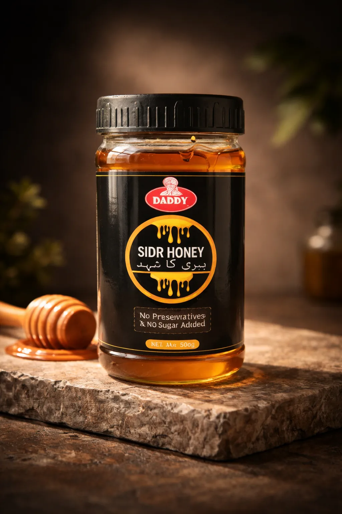
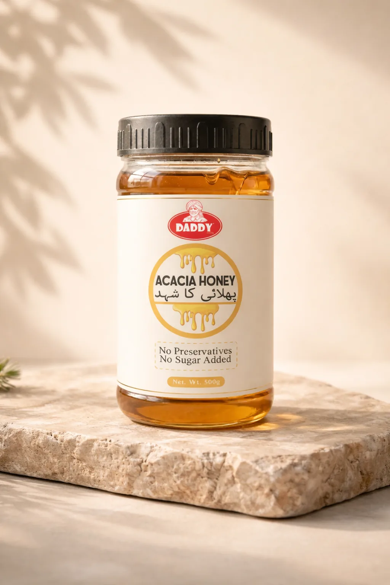
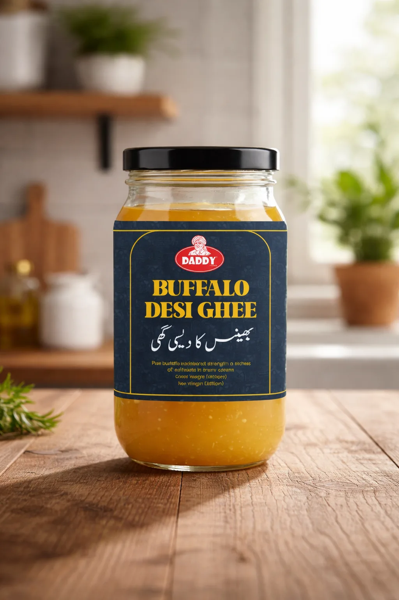
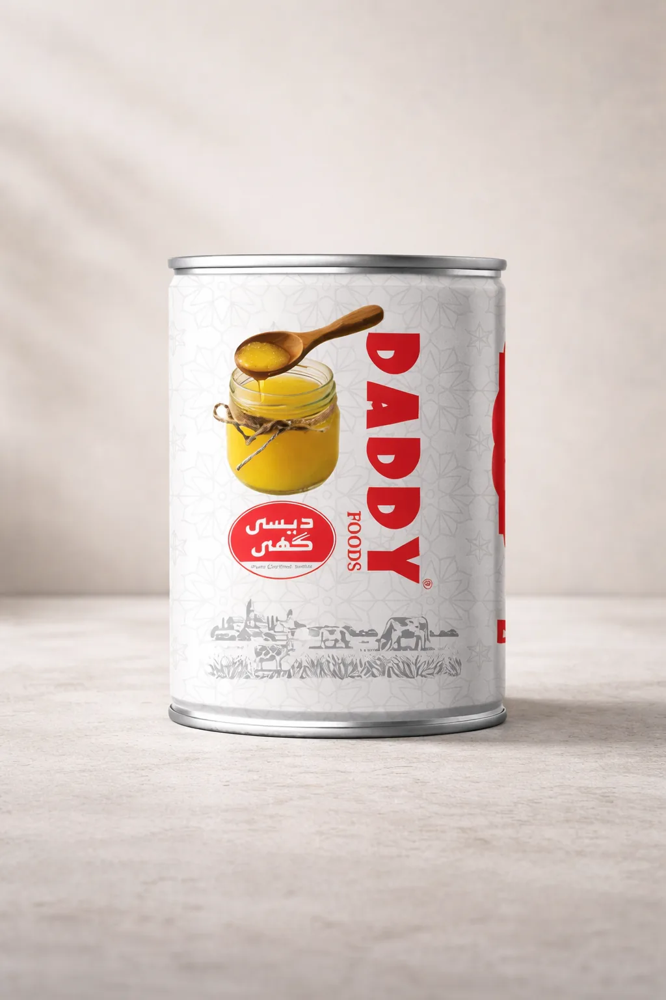
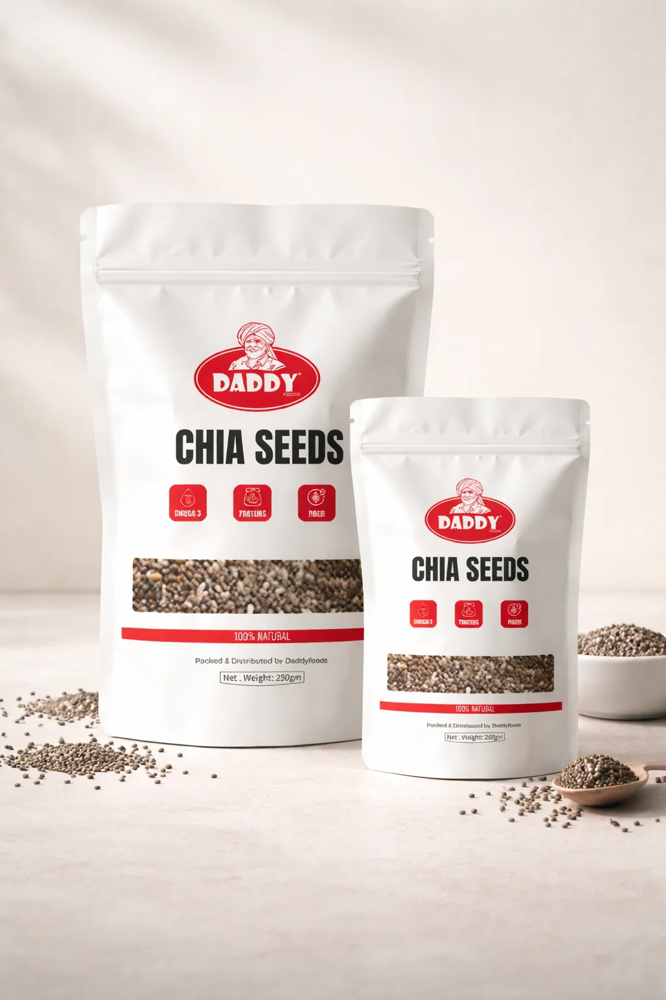
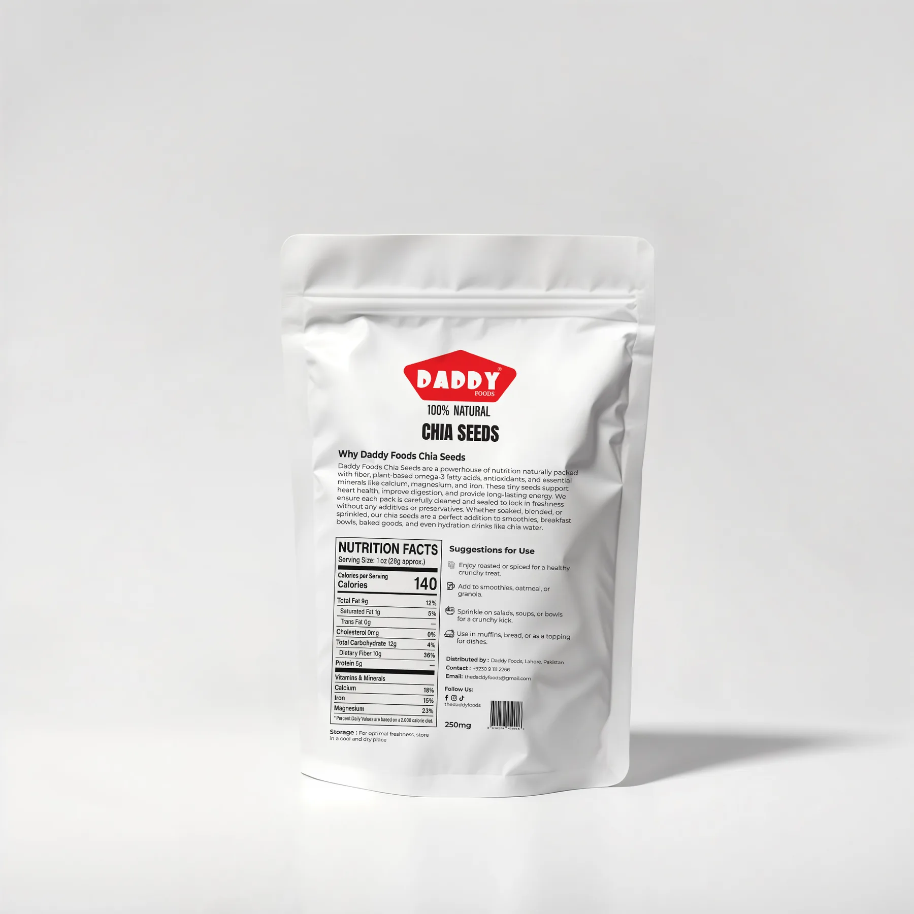

Packaging design
Daddy Foods
A food-packaging project built around recognizable branding, product clarity and consistent presentation across a multi-product range.

01 / Overview
Packaging designed as a product family.
The Daddy Foods project focuses on packaging consistency across multiple products. The central design problem is hierarchy: the brand must be recognizable first, the product must be understandable second, and the pack still needs enough personality to stand on its own.
Multiple SKUs
Keep the family connected while allowing product differences to remain clear.
Commercial clarity
Brand, product naming and presentation are structured for quick recognition.
7 visuals
Packaging designs and presentation mockups included in the portfolio.
02 / Packaging system
Pack design & mockups
The presentation moves from the overall family into individual pack applications, making it easier to judge both consistency and product-level execution.






03 / Outcome & value
Design beyond the screen.
The packaging system keeps the product family connected while making each SKU easy to identify, showing how the same visual thinking can work beyond digital content.